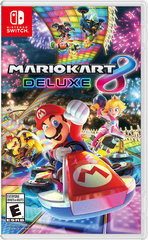
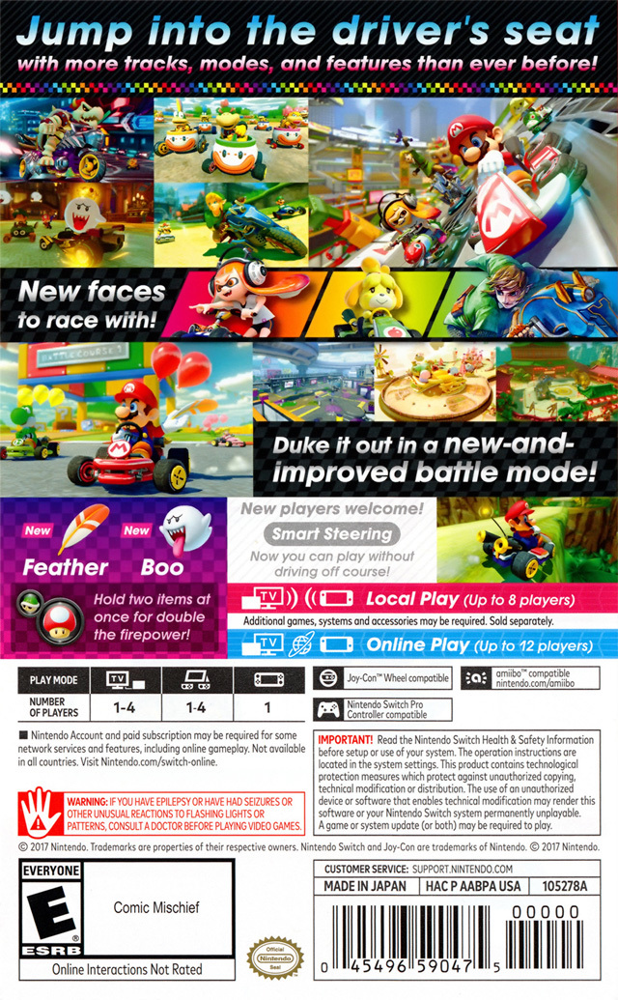
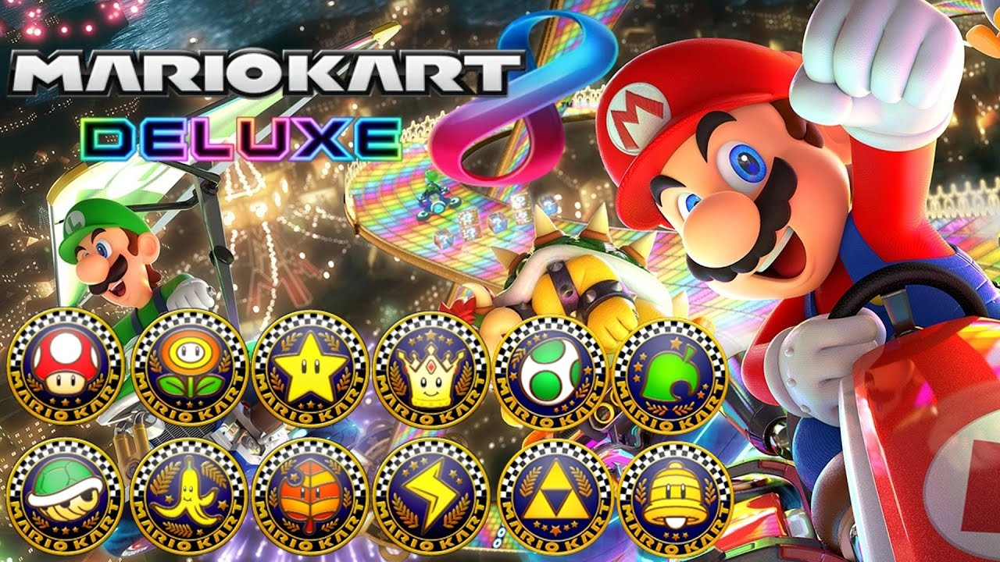
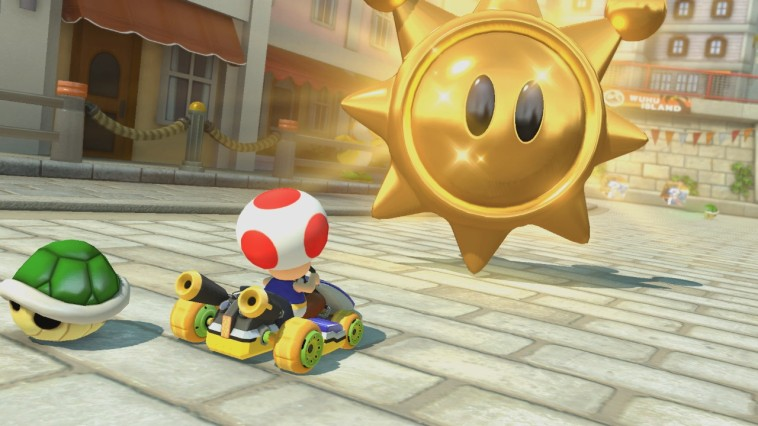
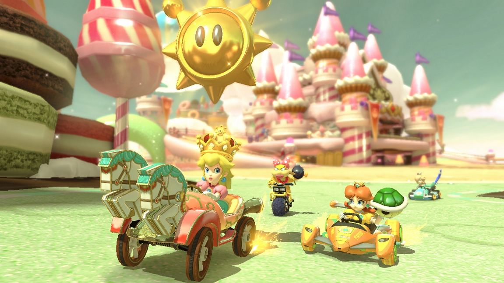

Personal Connections
 I personally don't really enjoy playing video games, in my opinion this game is fun and it is one of the best game ever. My brother got Mario Kart Deluxe 8 when it first came out, and we started playing it after. We both enjoy playing racing type of video games.The main reasons why I love Mario Kart Deluxe 8 is because it's fun, entertaining and it's easy to control. My favourite mode is Battle mode, my favourite in battle mode is shine thief. My favourite trail is Wuhu town.
  